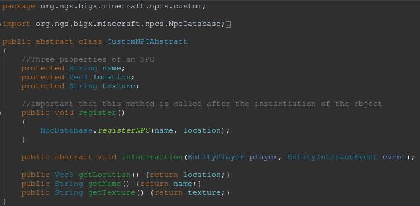
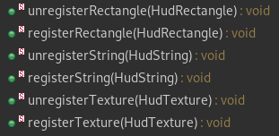

MineBike (research project)
TLDR
I led a team of high school students in adding content to a minecraft mod which used an exercise bike for leukemia patients to get exercise.Intro
This is the biggest project I've worked on. Let's begin with a brief description of the project.
This project was the PHD thesis of a student at the University of California, Irvine (UCI). It's a game designed for recovering leukemia patients (children) who are quarantined and cannot go outside to get exercise.
The game is a minecraft mod, which is very relevant because I had to learn how to use minecraft forge which was a complete nightmare since we were using a severely outdated version of the game (1.7.10 from 2014).
My Role
My official role on this project was to lead an internship program for students from Valencia High School (Placentia, CA). These students were rising seniors and had taken 3 years of computer science at their high school (They had more formal cs education than I had at that point lol). They were amazing to work with and it was an incredibly rewarding experience.
Why was I needed?
The game was successful at getting kids to exercise but it was lacking in content. The only thing that the players could do was this one minigame involving chasing an enemy through a path.
What did I do?
I designed 3 main systems to facilitate the addition of content to the mod. With these systems the high school students and myself each designed one new minigame to be added to the game. Each of these systems are technically interesting in some aspect, and are covered in the following sections. I also designed a fairly comprehensive manual for future developers to utilize these abstractions.
System 1: Custom Npc Interface
I created an abstraction for adding Npcs that did something when they were interacted with into the mod. It consisted of an abstract class with only a couple methods.
This is the entire class, and I quite like it. It's a one-stop shop for all you needs for creating an npc. It very adequately hides the implementation from the user, which is important for a good abstraction.
System 2: Custom Questing Interface
This one was a more robust implementation. It was something that I cooked up originally instead of hacking together some code that already existed in the codebase.
A "Quest" for the purposes of the implementation is something that can be "activated" and whilst activated it listens to the game's event bus to do add functionality to the game.
The implementation for this class does not all fit in a nice screenshot like the last one. It is covered more comprehensively in the manual I designed . It can be summarized like this however.
To create a quest, extend the abstract class CustomQuestAbstract.
Override all the different methods corresponding to different events on the minecraft forge event bus to do stuff when you want it to. Most common methods to override would be tick events which are executed on a loop in the game's code.
Create an instance of your subclass. Then to "activate" your quest, simply call the method CustomQuestEventHandler.registerQuest(your_quest_here).
To "de-activate" your quest you can simply call the method CustomQuestEventHandler.unregisterQuest(your_quest_here).
It's as simple as that!
This one was definitely the most utilized abstraction I made, and because of that it quickly became very complex. I tried to keep it relatively decoupled from other things, and succeeded fairly well compared to other code that was written before I came onto the project. The quest has no concept of the overall game that it is being played in so it is fairly modular and could in theory be used for things other than minigames which was the main use.
System 3: Custom Hud Interface
This one was the last abstraction I made, and I think it is the cleanest because of it.
As the title may have alluded to, this was a system for altering the HUD of the game.
The way that the previous developers had been doing this was by inserting their own OpenGL code directly into new classes responsible for different hud elements.
This was not going to fly because I had to show my team how to use all these tools and OpenGL is not incredibly intuitive for someone who has never seen it or used it before.
Enter the HudManager!
The HudManager is a state machine which allows the user to register certain objects with it. While those objects are registered with the state machine, they are drawn to the screen continuously until the are unregistered.
It has to be done this way because the minecraft game engine has a very specific order in which things are done, and if you just start making opengl calls during a game tick event, you're going to have a bad time.
Well, which objects are you going to register with the HudManager? Good question. There are three main things that the HudManager supports. Those are Strings, Textures, and Rectangles of a solid Color. As you can see by the six methods shown above.
The HudString, HudRectangle, and HudTexture classes are just simple classes with public data members for things you would expect like x, y, width, height, color, etc.
This one was a huge hit because the students I was working with had done programming in Java Swing (since that is in the curriculum for AP Computer Science in high school) and the interface I designed was pretty similar to that.
Summary?
Well, I guess it's a little bit weird to end the article right there, so here's sort of a formal ending. I learned a lot on this project and it was very fun. The codebase was not as polished as I expected it to be at the start, but I got over it and worked with it.